「心理健康」
-

美敦力胰岛素泵·售后服务
“不同年龄层对于糖尿病的认知也不一样。年龄小的患者需要家长的正确对待与引导。年龄大的患者需要自身的控制。”
-

省级医院·糖尿病科医生
“首先把血糖控制平稳。多与家人朋友交流沟通，让他人了解你的需要。选择适合自己的方法，保持健康生活状态。 ”
-

糖尿病患者·带病10年
“我们一定要接受它。正视它。其实它是一个很好的生活方式。让你去改变你的饮食状态和运动形态，去改变你的血糖。我的身边有很多朋友知道我得了这个病。他们也都能接受，能和我正常愉快的交往。”
小贴士
· 各年龄层患者注意事项 ·
-

儿童
家长需要告知孩子，胰岛素泵不能让别人碰。同时需要追加孩子的胰岛素用量。每个小患者对食物的反应不同
-
学生
学会调整发泄情绪，不要认为自己与别人不同。如若发现抑郁症状，及时就医。上学备好足量糖块，体育课需要随时注意血糖情况。家长与学校进行沟通，最好让班主任知道学生病情
-
青春期少年
女生生理期情绪变化大。青春期少年少女心理波动大。对于胰岛素的需求增加。需要更加频繁的监测血糖情况。家长需努力与孩子进行沟通，让孩子多多注意血糖变化
-
青壮年/中年
由于工作或其它原因，抽烟喝酒的习惯易养成。尽量饮用酒精度数较低的啤酒。如若遇到必须饮酒的情况，请让在场的某个人知道患者的病情。喝醉时，及时喝糖水。分清“醉酒”与低血糖的区别
-

老年人
老年患者心血管功能不好。感知血糖变化能力较差。应将血糖控制范围放宽。随身携带药物及病历卡
-

孕妇
孕妇需要格外谨慎对于胰岛素用量的控制。及时补充胰岛素量以及血糖监测。如若控制不佳，造成死胎及巨大婴的风险将增高

小结
除了身体上的不适，糖尿病人更加需要关注的是心理的健康。据调查显示，糖尿病人患抑郁症的比例逐年增高，并且年龄范围增大。除了正常的就医与监测 血糖，糖尿病患者更应该注意自己的心理变化。如若出现较强的情绪波动与负面心态，请及时进行心理咨询。